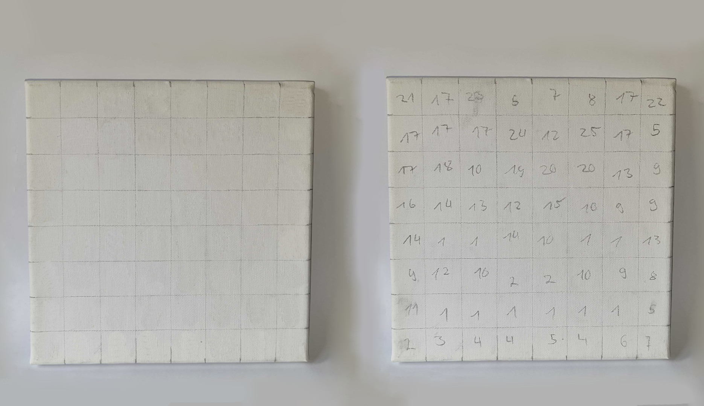
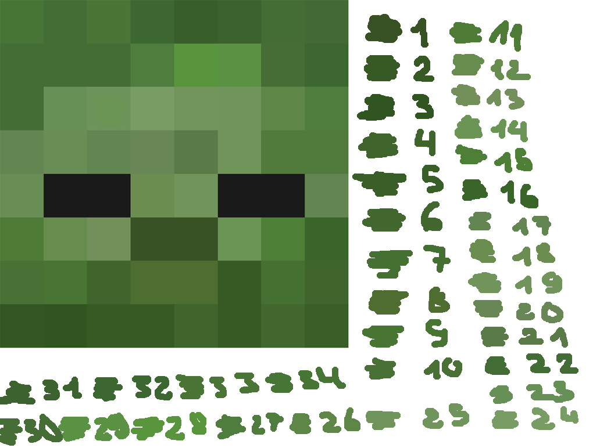

Written by Kyra Martín Aguilera on May 05, 2025
A Step-by-Step Guide
There’s something so satisfying about turning your favorite Minecraft mobs into real-life art. With just a few supplies and a bit of patience, you can create a pixel-perfect painting that’s worthy of hanging on your wall. I’ve even started my own little mob gallery—and trust me, it’s addictive.

Materials You'll Need
 2-4 hours depending on the complexity of your mob and drying time.
2-4 hours depending on the complexity of your mob and drying time.
- Blank canvas (I recommend using a 20x20 cm square canvas, but any size works)
- Pencil
- Ruler
- Acrylic paints
- Acrylic palette or mixing tray
- Water cup
- Paintbrush (preferably square and small for better control)
- Optional: Table cover (newspaper, cardboard, etc.)
- Optional: Printed mob reference image
Step 1 | Prepare Your Grid
The first step in creating your mob art is preparing the canvas. For a standard mob, like a zombie or skeleton, we will use a grid of 8x8 squares. Since I’m working with a 20x20 cm canvas, each square will measure 2.5 cm. You can adjust this based on the size of your canvas.
Once you've determined your grid size, grab your ruler and pencil to make light marks every 2.5 cm on each side of the canvas. If your mob has lighter colors, I recommend keeping your marks faint so they’re easy to cover later, but don't worry—acrylic paints are forgiving. If necessary, you can apply two coats of paint to cover any pencil marks.
After you've made your marks, connect them vertically and horizontally to create your 8x8 grid, and voilà, you're ready to move on to the next step!

Step 2 | Choose a Mob & Plan Your Colors
Next, you’ll need a reference image of the mob you want to paint. Just head to Google and search something like “[mob name] face Minecraft” and download an image that clearly shows the face in pixel form.
Once you have your reference, it’s time to break down the colors. What might look simple at first can actually have way more variation—take the zombie above, for example: it has 34 different shades of green. Don’t let that scare you off though!
Keep in mind that due to color theory, colors can appear different depending on what they're next to. That’s why it’s helpful to map your colors—take each shade you’ve selected and lay a small swatch of it on a neutral or white background. This helps you get an accurate sense of the true tone before painting.
Use a color picker tool (like the one in Microsoft Paint or any editing app) to identify each unique shade. Then, number the colors and assign them to your canvas grid—each square with the same color gets the same number. This becomes your painting guide.

Step 3 | Start Painting
Now it’s time to paint! Grab your acrylic paints, your brush, and fill a cup with water. I personally like to work either dark to light or light to dark, but go with whatever feels most natural to you.
Make sure to keep your mapped reference close by. Start mixing your colors and get ready to fill in the grid. From here on out, the final result really depends on your precision and patience.
Some people like to use painter’s masking tape to keep the edges clean—it helps, but honestly, it takes a lot more time. Do what works best for you.
My biggest tip: mix enough paint for each color to cover all the squares labeled with that number. That way, you won’t have to remix and risk slight differences in shade. Also, try to apply consistent coats to keep your blocks even and vibrant.
Step 4 | Let It Dry
Once you’re done painting, let it dry. Acrylic paints are usually pretty fast, but I recommend giving it at least 10–20 minutes to fully set—especially if you’ve layered the paint a bit thicker.
When the front is dry, you can flip the canvas and paint the back black. This step is optional, but it helps prevent any light from seeping through and gives your piece a cleaner, more polished look overall.
Tips & Tricks
- Take a photo of your mapped canvas. It’s easy to forget which number goes where or lose track mid-painting. A quick photo of your numbered grid can save you if you need to take a break or reuse the design.
- Avoid tricky yellows. Colors like yellow can be frustrating—they often lack opacity and can require multiple coats. Mobs like Blazes might look cool, but they’re not beginner-friendly due to this.
- Use natural light. Sunlight gives you the most accurate sense of color while painting. Indoor lighting can sometimes shift the tones and make your mapping less precise.
- Work light to dark (or vice versa). Starting with lighter shades and gradually darkening them—or the other way around—lets you mix colors more efficiently. You can adjust tones directly on your palette or even on the canvas by layering carefully.
- Watch for undertones. Many Minecraft mobs have colors that are more complex than they seem. For example, zombies aren’t just green—they often include yellow or blue undertones. Identifying these subtle shifts early will help your painting feel more accurate.
- Be generous with paint mixing. When mixing a custom color, make more than you think you’ll need. Recreating the exact same shade later can be surprisingly difficult.
- Outline, then fill. For cleaner lines and less color bleeding, paint the border of each pixel square first, then fill it in.
- Don’t forget the sides! Painting the edges of your canvas gives the final piece a polished, finished look—especially if you plan to hang it without a frame.
- Check your brushes. After rinsing a brush, make sure it's dry before using it again. Wet brushes thin out acrylic paint, which can cause uneven coverage and patchiness once dry.
- Hold the canvas steady—but hands off the paint! It sounds obvious, but accidental smudging is common. Grip the canvas from the edges or dry areas only to keep your work clean and intact.

About
Every chaotic project I touch ends up right here. From pixel paintings to questionable experiments—I post it all. If you like this one, you’ll probably find something else to obsess over. Scroll through the mess, there’s more where that came from.